Dealing with spatial data
Gema
Fernández-Avilés

Diego
Hernangómez
2024-01-04
Source:vignettes/articles/x01_dealing_spatial.Rmd
x01_dealing_spatial.RmdWhat are spatial data?
Geospatial data are any data that contains information about a specific location on the Earth’s surface. Spatial data arise in a myriad of fields and applications, so there is also a wealth of spatial data types. Cressie (1993) provides a simple and useful classification of spatial data:
- Geostatistical data. For example, the level of (ln)CO in Madrid:
- Lattice data. For example, Organ donor rate by country.
- Point patterns. For example, deaths COVID, per day, in Spain.

See Montero, Fernández-Avilés, and Mateu (2015) for more details. In this work, we focus on geostatistical data.
What do we need to carry out a geostatistical data analysis in R?
Some useful libraries we are going to use throughout this article are:
library(climaemet) # meteorological data
library(mapSpain) # base maps of Spain
library(classInt) # classification
library(terra) # raster handling
library(sf) # spatial shape handling
library(gstat) # for spatial interpolation
library(geoR) # for spatial analysis
library(tidyverse) # collection of R packages designed for data science
library(tidyterra) # tidyverse methods for terra packageWhere can we find geostatistical data?
In this paper, we are going to deal with geostatistical data; specifically we are going to model the air temperature in Spain on 8 January 2021.
We download the data with climaemet (>= 1.0.0) package (Pizarro, Hernangómez, and Fernández-Avilés 2021) in R. climaemet allows us to download the climatic data from the Spanish Meteorological Agency (AEMET) directly using their API. climaemet is available on CRAN:
# Install climaemet
install.packages("climaemet")API Key
To be able to download data from AEMET you will also need a free API key, which you can get here:.
What is the structure of geostatistical data?
Geostatistical data arises when the domain under study is a fixed set \(D\) that is continuous. That is: (i) \(Z(s)\) can be observed at any point of the domain (continuous); and (ii) the points in \(D\) are non-stochastic (fixed, \(D\) is the same for all the realizations of the spatial random function).
First, take a look at the characteristics of the stations. We are interested in latitude and longitude attributes.
stations <- aemet_stations()
# Have a look on the data
stations %>%
dplyr::select(name = nombre, latitude = latitud, longitude = longitud) %>%
head() %>%
knitr::kable(caption = "Preview of AEMET stations")| name | latitude | longitude |
|---|---|---|
| ARENYS DE MAR | 41.58750 | 2.540000 |
| BARCELONA AEROPUERTO | 41.29278 | 2.070000 |
| BARCELONA, FABRA | 41.41833 | 2.124167 |
| BARCELONA | 41.39056 | 2.200000 |
| MANRESA | 41.72000 | 1.840278 |
| SABADELL AEROPUERTO | 41.52361 | 2.103056 |
Next, we are going to extract the data. We select here the daily values of 8 January 2021:
# Select data
date_select <- "2021-01-08"
clim_data <- aemet_daily_clim(
start = date_select, end = date_select,
return_sf = TRUE
)Now, we examine the possible variables that can be analyzed. We are
interested in minimum daily temperature named
tmin, although the API also provides other interesting
information:
names(clim_data)
#> [1] "fecha" "indicativo" "nombre" "provincia" "altitud"
#> [6] "tmed" "prec" "tmin" "horatmin" "tmax"
#> [11] "horatmax" "dir" "velmedia" "racha" "horaracha"
#> [16] "presMax" "horaPresMax" "presMin" "horaPresMin" "sol"
#> [21] "geometry"In this step, we select the variable of interest for each station. For simplicity, we would remove the Canary Islands in this exercise:
clim_data_clean <- clim_data %>%
# Exclude Islands from analysis
filter(!provincia %in% c("LAS PALMAS", "STA. CRUZ DE TENERIFE")) %>%
dplyr::select(fecha, tmin) %>%
# Exclude NAs
filter(!is.na(tmin))
# Plot with outline of Spain
esp_sf <- esp_get_ccaa(epsg = 4326) %>%
# Exclude Canary Islands from analysis
filter(ine.ccaa.name != "Canarias") %>%
# Group the whole country
st_union()
ggplot(esp_sf) +
geom_sf() +
geom_sf(data = clim_data_clean) +
theme_light() +
labs(
title = "AEMET Stations in Spain",
subtitle = "excluding Canary Islands"
) +
theme(
plot.title = element_text(size = 12, face = "bold"),
plot.subtitle = element_text(size = 8, face = "italic")
)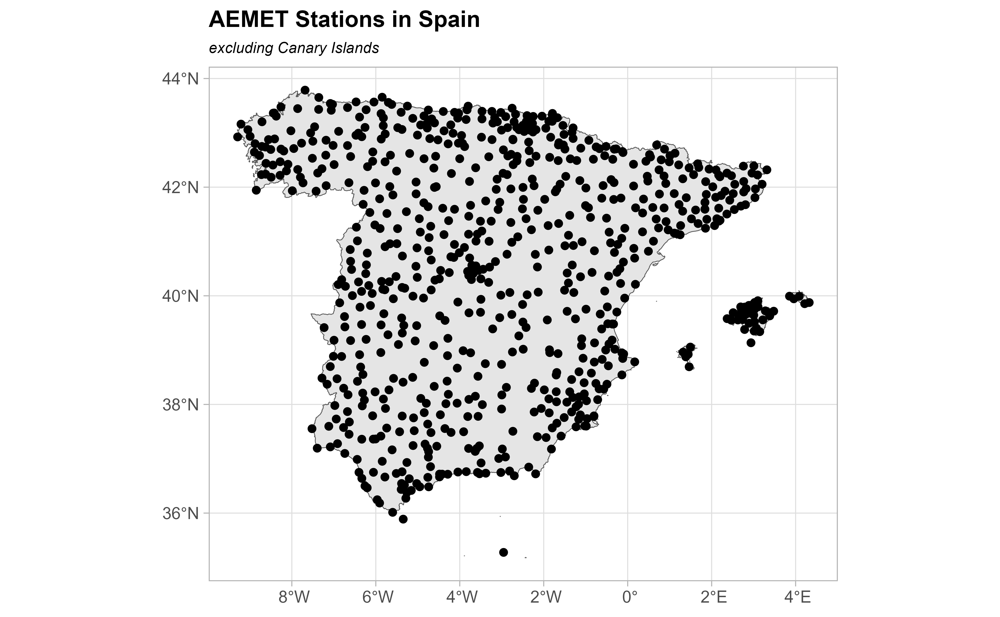
Now, let’s plot the values as a choropleth map:
# This would be common to all the paper
br_paper <- c(-Inf, seq(-20, 20, 2.5), Inf)
pal_paper <- hcl.colors(15, "PuOr", rev = TRUE)
ggplot(clim_data_clean) +
geom_sf(data = esp_sf, fill = "grey95") +
geom_sf(aes(fill = tmin), shape = 21, size = 6, alpha = .7) +
labs(fill = "Min. temp") +
scale_fill_gradientn(
colours = pal_paper, breaks = br_paper,
labels = scales::label_number(suffix = "°"),
guide = "legend"
) +
theme_light() +
labs(
title = "Minimum temperature",
subtitle = format(as.Date(date_select), "%d %b %Y")
) +
theme(
plot.title = element_text(size = 12, face = "bold"),
plot.subtitle = element_text(size = 8, face = "italic")
)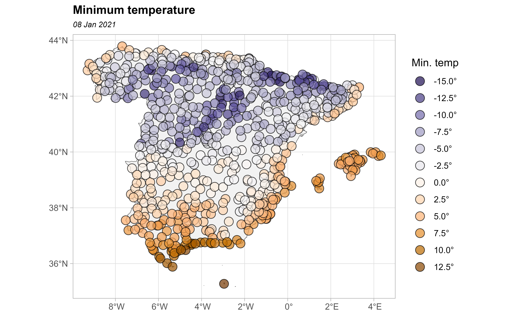
Are the observations independent or do they exhibit spatial dependence?
The First Law of Geography states that Everything is related to everything else. But near things are more related than distant things (Tobler 1969). This law is the basis of the fundamental concepts of spatial dependence and spatial autocorrelation.
In our study, we can observe positive spatial dependence: high temperature values are all found together in the south of Spain and low temperatures are found together in the north of Spain.
clim_data_clean %>%
st_drop_geometry() %>%
select(tmin) %>%
summarise(across(everything(), list(
min = min, max = max, median = median, sd = sd,
n = ~ sum(!is.na(.x)), q25 = ~ quantile(.x, .25), q75 = ~ quantile(., .75)
),
.names = "{.fn}"
)) %>%
knitr::kable()| min | max | median | sd | n | q25 | q75 |
|---|---|---|---|---|---|---|
| -14.9 | 13.6 | -0.5 | 5.574232 | 215 | -4.55 | 3.5 |
In the next plot, we divide the minimum temperature into quartiles to visualize the spatial distribution of values.
bubble <- clim_data_clean %>%
arrange(desc(tmin))
# Create quartiles
cuart <- classIntervals(bubble$tmin, n = 4)
bubble$quart <- cut(bubble$tmin, breaks = cuart$brks, labels = FALSE)
ggplot(bubble) +
geom_sf(aes(size = quart, fill = quart),
colour = "grey20", alpha = 0.7,
shape = 21
) +
scale_size(
range = c(2, 8), labels = scales::label_number(prefix = "Q"),
guide = "legend"
) +
scale_fill_gradientn(
colours = pal_paper,
labels = scales::label_number(prefix = "Q"), guide = "legend"
) +
theme_light() +
labs(
title = "Minimum temperature - Quartile map",
subtitle = format(as.Date(date_select), "%d %b %Y"),
fill = "Quartile",
size = "Quartile"
) +
theme(
plot.title = element_text(size = 12, face = "bold"),
plot.subtitle = element_text(size = 8, face = "italic")
)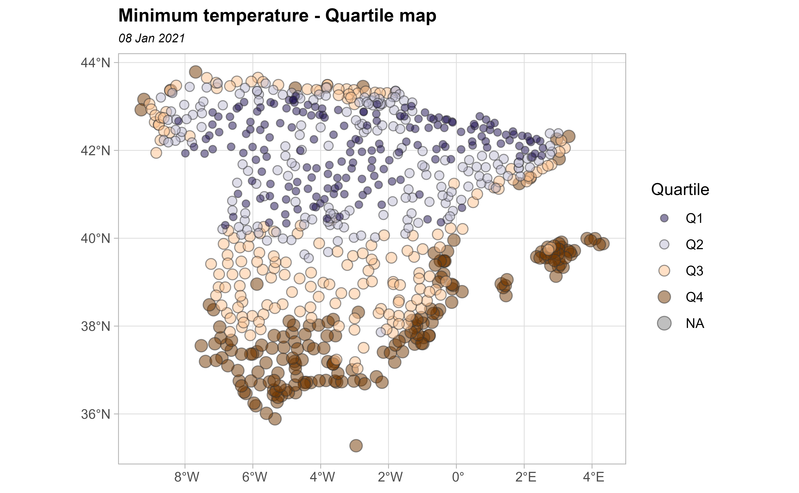
Preparing the data as a spatial object
An important thing to consider in any spatial analysis or visualization is the coordinate reference system (CRS). In this exercise, we choose to project our objects to ETRS89 / UTM zone 30N EPSG:25830, which provides projected x and y values in meters and maximizes the accuracy for Spain.
clim_data_utm <- st_transform(clim_data_clean, 25830)
esp_sf_utm <- st_transform(esp_sf, 25830)Creating a grid for the spatial prediction
To predict values at locations where no measurements have been made,
we need to create a grid of locations and perform an interpolation. On
this article we are going to use the terra package for working with
spatial grids (SpatRaster objects). Hijmans and Ghosh (2023) provides a detailed explanation on
how to perform spatial interpolation using terra and
gstat packages.
This grid is composed of equally spaced points over the whole (bounding box) of Spain. Most of the squares do not have any stations, so no observation observations are. However, we use the values of the cells that contain stations to interpolate the data.
# Create grid 5*5 km (25 km2)
# The resolution in set based on the unit of the projection, in this case meters
grd <- rast(vect(esp_sf_utm), res = c(5000, 5000))
cellSize(grd)
#> class : SpatRaster
#> dimensions : 193, 228, 1 (nrow, ncol, nlyr)
#> resolution : 5000, 5000 (x, y)
#> extent : -13968.29, 1126032, 3892750, 4857750 (xmin, xmax, ymin, ymax)
#> coord. ref. : ETRS89 / UTM zone 30N (EPSG:25830)
#> source(s) : memory
#> name : area
#> min value : 24785456
#> max value : 25019998There are some additional steps that we must perform in order to prepare our data for spatial interpolation.
# There are some points duplicated, we need to remove those
clim_data_clean_nodup <- clim_data_utm %>%
distinct(geometry, .keep_all = TRUE)
nrow(clim_data_utm)
#> [1] 215
nrow(clim_data_clean_nodup)
#> [1] 211
clim_data_clean_nodup
#> Simple feature collection with 211 features and 2 fields
#> Geometry type: POINT
#> Dimension: XY
#> Bounding box: xmin: -13501.2 ymin: 3903695 xmax: 1117513 ymax: 4858794
#> Projected CRS: ETRS89 / UTM zone 30N
#> # A tibble: 211 × 3
#> fecha tmin geometry
#> <date> <dbl> <POINT [m]>
#> 1 2021-01-08 0.4 (974469.6 4626714)
#> 2 2021-01-08 5.9 (342907.5 4117910)
#> 3 2021-01-08 -2.2 (498174.6 4429021)
#> 4 2021-01-08 -5.5 (613363.5 4576400)
#> 5 2021-01-08 3.8 (714443.9 4319879)
#> 6 2021-01-08 -5.7 (279182 4654420)
#> 7 2021-01-08 -6 (367250.7 4650525)
#> 8 2021-01-08 4.2 (750113.1 4427116)
#> 9 2021-01-08 -9.5 (414744.8 4516276)
#> 10 2021-01-08 -8.3 (405392.2 4760574)
#> # ℹ 201 more rowsStructural analysis of the spatial dependence
Exploratory Spatial Data Analysis (ESDA)
Exploratory Data Analysis (EDA) is the first important step of data
modeling, so ESDA is also the first step in spatial statistics.
What do the data tell me about the relationship between
X and Y coordinates and the variable
tmin ?
In order to answer this question, we summarize our spatial object and we observe a summary of: (i) the number of data points, (ii) the coordinates, (iii) the distance and (iv) the data.
clim_data_clean_nodup_geor <- clim_data_clean_nodup %>%
st_coordinates() %>%
as.data.frame() %>%
bind_cols(st_drop_geometry(clim_data_clean_nodup)) %>%
as.geodata(coords.col = 1:2, data.col = "tmin")
summary(clim_data_clean_nodup_geor)
#> Number of data points: 211
#>
#> Coordinates summary
#> X Y
#> min -13501.2 3903695
#> max 1117513.0 4858794
#>
#> Distance summary
#> min max
#> 1125.199 1179604.366
#>
#> Data summary
#> Min. 1st Qu. Median Mean 3rd Qu. Max.
#> -14.900000 -4.600000 -0.500000 -0.628436 3.500000 13.600000Second, we generate several exploratory geostatistical plots. The
first is a quartile map, the next two show tmin against the
X and Y coordinates and the last is an
histogram of the tmin values.
plot(clim_data_clean_nodup_geor)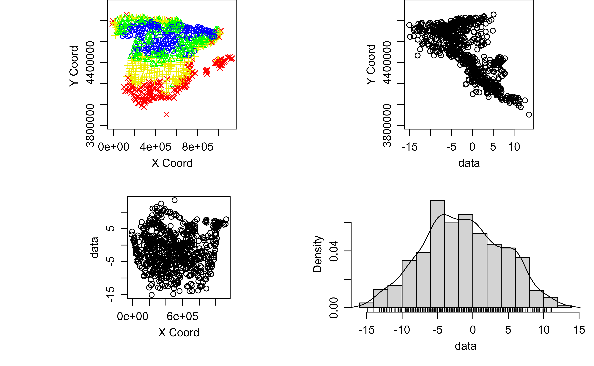
Looking the histogram, we see the data set is Gaussian! Note that kriging provides the Best Linear Unbiased Predictor BLUP.
ggplot(clim_data_clean_nodup, aes(x = tmin)) +
geom_histogram(aes(fill = cut(tmin, 15)),
color = "grey40",
binwidth = 1, show.legend = FALSE
) +
scale_fill_manual(values = pal_paper) +
labs(y = "n obs.", x = "Min. temp (°)") +
theme_light() +
labs(
title = "Histogram - Minimum temperature",
subtitle = format(as.Date(date_select), "%d %b %Y")
) +
theme(
plot.title = element_text(size = 12, face = "bold"),
plot.subtitle = element_text(size = 8, face = "italic")
)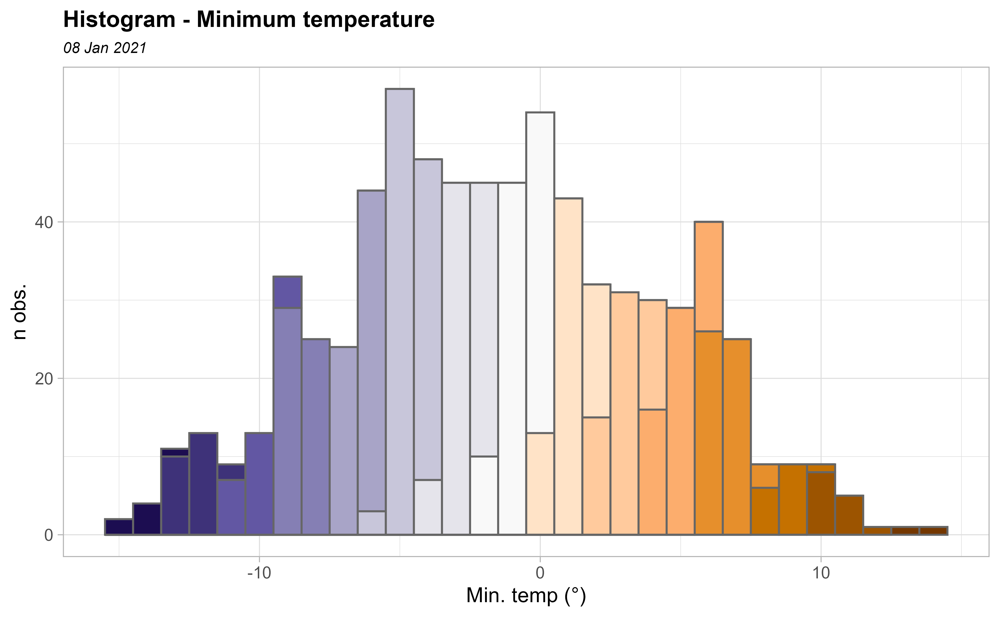
The semivariogram
The semivariogram function is the keystone of geostatistical prediction. So, following Montero, Fernández-Avilés, and Mateu (2015) we formulate this question: How do we express in a function the structure of the spatial dependence or correlation present in the realization observed? The answer to this question, known in the geostatistics literature as the structural analysis of the spatial dependence, or, simply, the structural analysis, is a key issue in the subsequent process of optimal prediction (kriging), as the success of the kriging methods depends on the functions yielding information about the spatial dependence detected.
The functions referred to above are covariance functions and semivariograms, but they must meet a series of requisites. As we only have the observed realization, in practice, the covariance functions and semivariograms derived from it may not satisfy these requisites. For this reason, one of the theoretical models (also called the valid models) that do comply must be fitted to it.
There are some packages in R to carry out a geostatistical analysis
but there are “the big two”: geoR (Ribeiro, Jr. and Diggle 2001) and
gstat (Gräler, Pebesma, and Heuvelink
2016).
The semivariogram is, generally, a non-decreasing monotone function, so that the variability of the first increments of the random functions increases with distance.
We are going to generate the (omnidirectional) empirical semivariogram of our data, which, in a second step, has to be fitted to a theoretical one.
vario_geor <- variog(clim_data_clean_nodup_geor,
coords = clim_data_clean_nodup_geor$coords,
data = clim_data_clean_nodup_geor$data,
uvec = seq(0, 1000000, l = 25)
)
#> variog: computing omnidirectional variogram
plot(vario_geor, pch = 20)eyefit() is an interactive function that fits the
parameters of the semivariogram by eye. It is an intuitive function to
play with the types and parameters of the semivariogram. It can help you
to fit the empirical semivariogram to a theoretical one. Of course,
there are other statistical methods to fit the semivariogram: Ordinary
Least Squares (OLS), Weighted Least Squares (WLS), Maximum Likelihood
(ML), Restricted Maximum Likelihood (REML).
Run it on your PC!
eyefit(vario_geor)With geoR::eyefit() we have observed that there
different types of semivariograms and each type
contains several parameters that have to be fitted.
The main types of semivariograms are:
- Spherical
- Exponential
- Gaussian
- Hole Effect
- K-Bessel
- J-Bessel
- Stable
- Mattern
- Circular
- Nugget
A graphical summary of the most common spatial semivariogram models can be found here:
Regarding the parameters, the main ones are:
- Sill: is defined as the a priori variance of the random function.
- Range: is the distance at which the sill is reached, which defines the threshold of spatial dependence.
- Nugget: The value at which the semivariogram intercepts the y-value. Theoretically, at zero separation distance, the semivariogram value is 0. The nugget effect can be attributed to measurement errors or spatial sources of variation at distances smaller than the sampling interval or both.
For a detailed study of the semivariogram function see Montero, Fernández-Avilés, and Mateu (2015).
Now, we plot the empirical semivariogram of our data (again) with
gstat::variogram and we check the semivariogram in four
directions (0°, 45°, 90°, 135°).
# Directional empirical semivariogramin gstat()
vgm_dir <- variogram(tmin ~ 1, clim_data_clean_nodup,
cutoff = 1000000, alpha = c(0, 45, 90, 135)
)
plot(vgm_dir)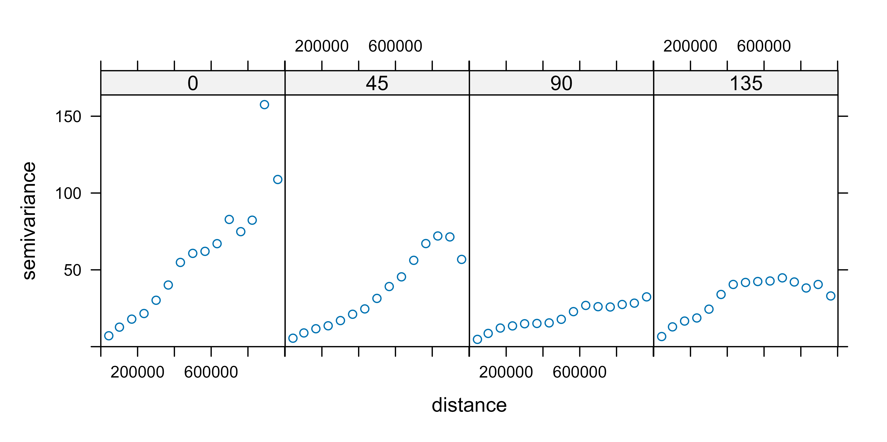
We can see that all the semivariograms exhibit spatial dependence. We choose the 45° semivariogram.
vgm_dir_45 <- variogram(tmin ~ 1, clim_data_clean_nodup,
cutoff = 1000000,
alpha = 45
)Now, we fit the empirical semivariogram to a theoretical
semivariogram, which is included in the kriging equations. Note that, in
our case, the object fit_var contains the value of the
estimated parameters.
fit_var <- fit.variogram(vgm_dir_45, model = vgm(model = "Sph"))
fit_var
#> model psill range
#> 1 Sph 47.73718 830894.5Finally, we plot the empirical and the theoretical semivariograms together.
# Plot empirical (dots) and theoretical (line) semivariograms
plot(vgm_dir_45, fit_var,
main = "Empirical (dots) and theoretical (line) semivariograms "
)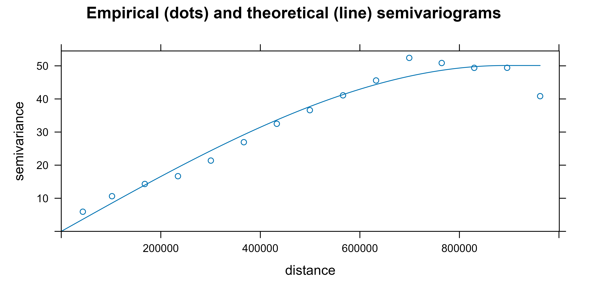
Carrying out Ordinary Kriging
Once a theoretical semivariogram has been chosen, we are ready for spatial prediction. The method geostatistics uses for spatial prediction is termed kriging in honor of the South African mining engineer, Daniel Gerhardus Krige.
According to Montero, Fernández-Avilés, and Mateu (2015), kriging aims to predict the value of a random function, \(Z(s)\), at one or more non-observed points (or blocks) from a collection of data observed at \(n\) points (or blocks in the case of block prediction) of a domain \(D\), and provides the best linear unbiased predictor (BLUP) of the regionalized variable under study at such non-observed points or blocks
There are different kinds of kriging depend on the characteristics of the spatial process: simple, ordinary or universal kriging (external drift kriging), kriging in a local neighborhood, point kriging or kriging of block mean values and conditional (Gaussian or indicator) simulation equivalents for all kriging varieties.
In this work we deal with ordinary kriging, the most widely-used kriging method. According to Wackernagel (1995) it serves to estimate a value at a point of a region for which a variogram is known, using data in the neighborhood of the estimation location.
In this study, we perform ordinary kriging (OK) following Hijmans and Ghosh (2023).
# Need to pass the input as data frame
clim_data_clean_nodup_df <- vect(clim_data_clean_nodup) %>%
as_tibble(geom = "XY")
clim_data_clean_nodup_df
#> # A tibble: 211 × 4
#> fecha tmin x y
#> <date> <dbl> <dbl> <dbl>
#> 1 2021-01-08 0.4 974470. 4626714.
#> 2 2021-01-08 5.9 342908. 4117910.
#> 3 2021-01-08 -2.2 498175. 4429021.
#> 4 2021-01-08 -5.5 613364. 4576400.
#> 5 2021-01-08 3.8 714444. 4319879.
#> 6 2021-01-08 -5.7 279182. 4654420.
#> 7 2021-01-08 -6 367251. 4650525.
#> 8 2021-01-08 4.2 750113. 4427116.
#> 9 2021-01-08 -9.5 414745. 4516276.
#> 10 2021-01-08 -8.3 405392. 4760574.
#> # ℹ 201 more rows
k <- gstat(
formula = tmin ~ 1, locations = ~ x + y, data = clim_data_clean_nodup_df,
model = fit_var
)
kriged <- interpolate(grd, k, debug.level = 0)Now, we plot the kriging prediction:
pred <- ggplot(esp_sf_utm) +
geom_spatraster(data = kriged, aes(fill = var1.pred)) +
geom_sf(colour = "black", fill = NA) +
scale_fill_gradientn(
colours = pal_paper, breaks = br_paper,
labels = scales::label_number(suffix = "°"),
guide = guide_legend(
reverse = TRUE,
title = "Min. temp\n(kriged)"
)
) +
theme_light() +
labs(
title = "Ordinary Kriging - Minimum temperature",
subtitle = format(as.Date(date_select), "%d %b %Y")
) +
theme(
plot.title = element_text(size = 12, face = "bold"),
plot.subtitle = element_text(size = 8, face = "italic"),
panel.grid = element_blank(),
panel.border = element_blank()
)
pred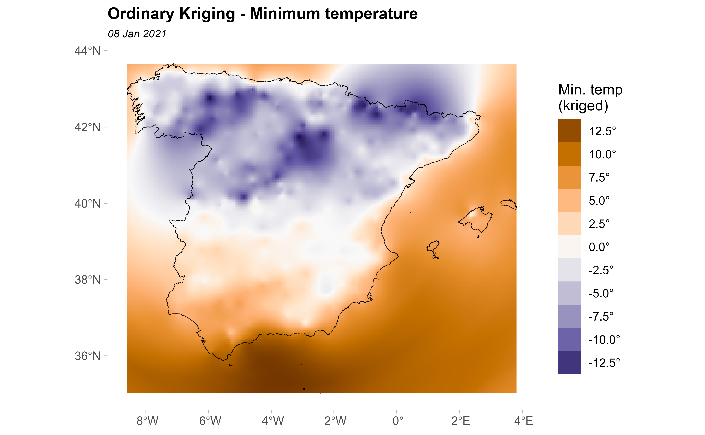
And, the variance of the prediction:
ggplot(esp_sf_utm) +
geom_spatraster_contour_filled(
data = kriged, aes(z = var1.var),
breaks = c(0, 1.5, 3, 6, 8, 10, 15, 20, Inf)
) +
geom_sf(colour = "black", fill = NA) +
geom_sf(data = clim_data_clean_nodup, colour = "blue", shape = 4) +
scale_fill_whitebox_d(
palette = "pi_y_g", alpha = 0.7,
guide = guide_legend(title = "Variance")
) +
theme_light() +
labs(
title = "OK prediction variance - Minimum temperature",
subtitle = format(as.Date(date_select), "%d %b %Y")
) +
theme(
plot.title = element_text(size = 12, face = "bold"),
plot.subtitle = element_text(size = 8, face = "italic"),
panel.grid = element_blank(),
panel.border = element_blank()
)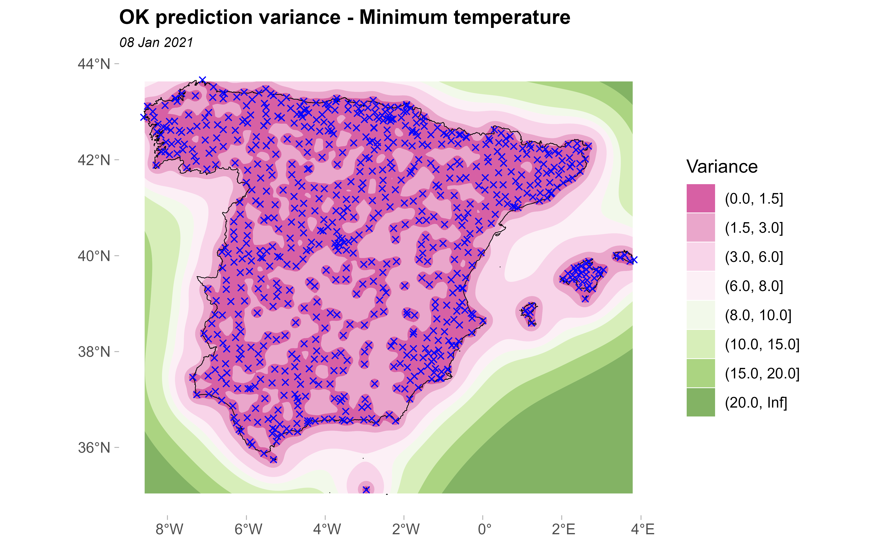
Lastly, we plot the variance and the prediction together:
pred +
geom_sf(data = clim_data_clean_nodup, colour = "darkred", shape = 20) +
geom_spatraster_contour(
data = kriged, aes(z = var1.var),
breaks = c(0, 2.5, 5, 10, 15, 20)
) +
labs(
title = "OK: Prediction and variance prediction",
caption = "Points: Climate stations.\nLines: Cluster of variances"
)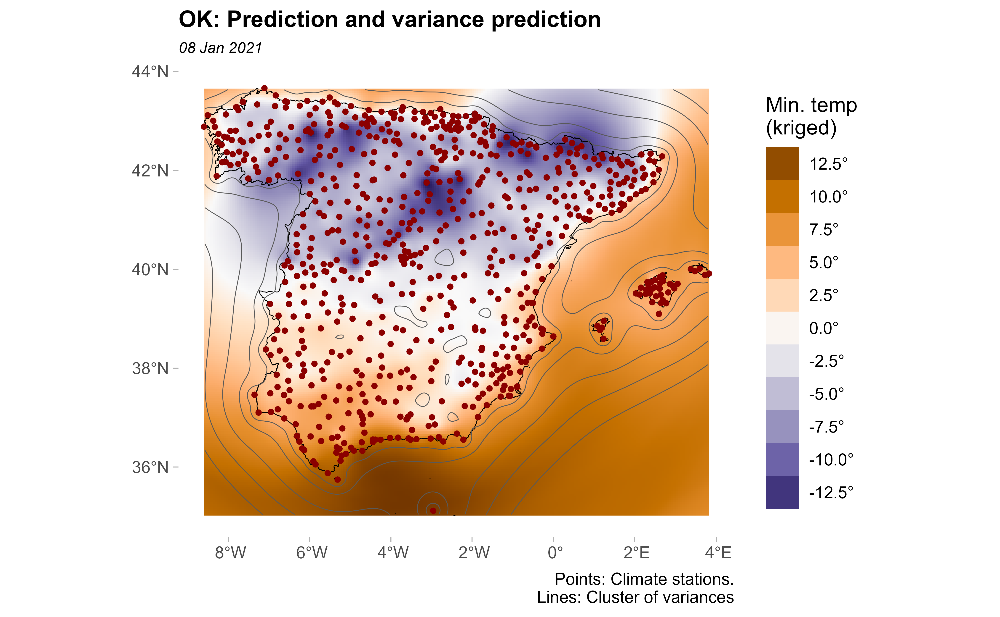
It can be seen that in the areas near to the observed points the prediction variance is minimal; on the contrary, in the areas where no monitoring stations can be found the prediction variance is bigger.
Comparing Ordinary Kriging with Inverse Distance Weighting
In this section, we compare Ordinary Kriging (OK) vs. the Inverse Distance Weighting (IDW) method, which is one of several approaches to perform spatial interpolation. Once again we would apply the approach described in Hijmans and Ghosh (2023) on how to perform these analysis in R with terra.
Note that IDW is a deterministic interpolation technique that creates surfaces from sample points using mathematical functions (it is assumed that the correlation can be defined as a reverse distance function of every point from neighboring points). On the contrary, stochastics interpolation techniques, like kriging, utilize the statistical properties of the sample points (based on the variogram which gives the spatial structure of the studied variable). Moreover, kriging provides the error prediction map.
gs <- gstat(
formula = tmin ~ 1, locations = ~ x + y, data = clim_data_clean_nodup_df,
set = list(idp = 2.0)
)
idw <- interpolate(grd, gs)
#> [inverse distance weighted interpolation]
#> [inverse distance weighted interpolation]
# Now we create a SpatRaster with two layers, one prediction each
all_methods <- c(
kriged %>% select(Kriging = var1.pred),
idw %>% select(IDW = var1.pred)
)
# Plot and compare
ggplot(esp_sf_utm) +
geom_spatraster(data = all_methods) +
facet_wrap(~lyr) +
geom_sf(colour = "black", fill = NA) +
scale_fill_gradientn(
colours = pal_paper, n.breaks = 10,
labels = scales::label_number(suffix = "°"),
guide = guide_legend(
title = "Min. temp",
direction = "horizontal",
keyheight = 0.5,
keywidth = 2,
title.position = "top",
title.hjust = 0.5,
label.hjust = .5,
nrow = 1,
byrow = TRUE,
reverse = FALSE,
label.position = "bottom"
)
) +
theme_void() +
labs(
title = "OK vs IDW",
subtitle = format(as.Date(date_select), "%d %b %Y")
) +
theme(
panel.grid = element_blank(),
panel.border = element_blank(),
plot.title = element_text(size = 12, face = "bold"),
plot.subtitle = element_text(size = 8, face = "italic"),
legend.text = element_text(size = 10),
legend.title = element_text(size = 11),
legend.position = "bottom"
)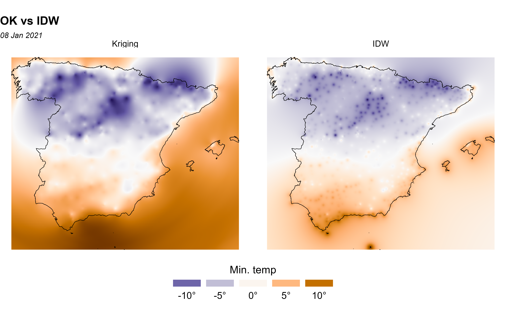
Cross-validation
To compare the two interpolation methods, OK and IDW, we should to carry out a cross-validation (CV) or leave-one-out process. Moreover, CV is the most widely-used procedure to validate the semivariogram model selected in a kriging interpolation.
## Cross-validation: OK
xv_ok <- krige.cv(tmin ~ 1, clim_data_clean_nodup, fit_var)
xv_ok %>%
st_drop_geometry() %>%
summarise(across(everything(), list(min = min, max = max),
.names = "{.col}_{.fn}"
)) %>%
pivot_longer(everything(),
names_to = c("field", "stat"),
names_sep = "_"
) %>%
pivot_wider(id_cols = stat, names_from = field)
#> # A tibble: 2 × 7
#> stat var1.pred var1.var observed residual zscore fold
#> <chr> <dbl> <dbl> <dbl> <dbl> <dbl> <dbl>
#> 1 min -11.3 0.188 -14.9 -7.96 -5.06 1
#> 2 max 11.9 18.8 13.6 6.94 4.52 211
# Cross-validation: IDW
xv_idw <- krige.cv(tmin ~ 1, clim_data_clean_nodup)
xv_idw %>%
st_drop_geometry() %>%
summarise(across(everything(), list(min = min, max = max),
.names = "{.col}_{.fn}"
)) %>%
pivot_longer(everything(),
names_to = c("field", "stat"),
names_sep = "_"
) %>%
pivot_wider(id_cols = stat, names_from = field)
#> # A tibble: 2 × 7
#> stat var1.pred var1.var observed residual zscore fold
#> <chr> <dbl> <dbl> <dbl> <dbl> <dbl> <dbl>
#> 1 min -8.33 NA -14.9 -10.0 NA 1
#> 2 max 10.0 NA 13.6 10.3 NA 211Now, we plot the leave-one-out cross validation residuals and observe that the residuals with OK are smaller than with OK.
# Create unique scale
allvalues <- values(all_methods, na.rm = TRUE, mat = FALSE)
# Prepare final data
cross_val <- xv_ok %>%
mutate(method = "OK") %>%
bind_rows(
xv_idw %>%
mutate(method = "IDW")
) %>%
select(method, residual) %>%
mutate(method = as_factor(method), cat = cut_number(residual, 5))
ggplot(cross_val) +
geom_sf(data = esp_sf_utm, fill = "grey90") +
geom_sf(aes(fill = cat, size = cat), shape = 21) +
facet_wrap(~method) +
scale_size_manual(values = c(3, 1, 0.5, 1, 3)) +
scale_fill_whitebox_d(palette = "pi_y_g", alpha = 0.7) +
labs(
title = "Tmin: leave-one-out cross validation residuals",
subtitle = "By Method",
fill = "",
size = ""
) +
theme(
plot.title = element_text(size = 12, face = "bold"),
plot.subtitle = element_text(size = 8, face = "italic"),
strip.text = element_text(face = "bold")
)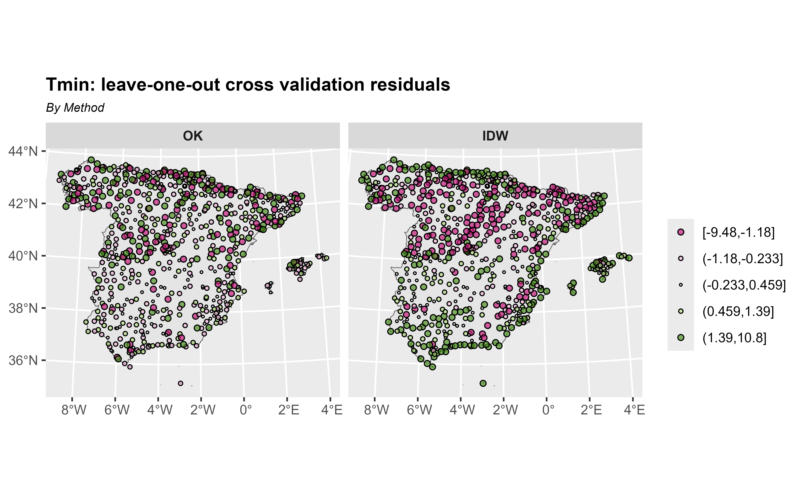
Moreover, calculating the diagnostic statistics from the results it is a good way to select the best interpolation method. The error-based measures used in the study include the root-mean-square error (RMSE) and the mean error (ME).
me <- function(observed, predicted) {
mean((predicted - observed), na.rm = TRUE)
}
rmse <- function(observed, predicted) {
sqrt(mean((predicted - observed)^2, na.rm = TRUE))
}
# OK Diagnostic statistics
me_ok <- me(xv_ok$observed, xv_ok$var1.pred)
rmse_ok <- rmse(xv_ok$observed, xv_ok$var1.pred)
# IDw Diagnostic statistics
me_idw <- me(xv_idw$observed, xv_idw$var1.pred)
rmse_idw <- rmse(xv_idw$observed, xv_idw$var1.pred)So, as we expected, we can see that OK yields better predictions than IDW.
| Diagnostic statistics | ME | RMSE |
|---|---|---|
| OK | -0.016 | 1.996 |
| IDW | 0.025 | 2.756 |
Session info
Details
#> ─ Session info ───────────────────────────────────────────────────────────────
#> setting value
#> version R version 4.3.2 (2023-10-31 ucrt)
#> os Windows Server 2022 x64 (build 20348)
#> system x86_64, mingw32
#> ui RTerm
#> language en
#> collate English_United States.utf8
#> ctype English_United States.utf8
#> tz UTC
#> date 2024-01-04
#> pandoc 2.19.2 @ C:/HOSTED~1/windows/pandoc/219~1.2/x64/PANDOC~1.2/ (via rmarkdown)
#>
#> ─ Packages ───────────────────────────────────────────────────────────────────
#> package * version date (UTC) lib source
#> bslib 0.6.1 2023-11-28 [1] RSPM
#> cachem 1.0.8 2023-05-01 [1] RSPM
#> class 7.3-22 2023-05-03 [3] CRAN (R 4.3.2)
#> classInt * 0.4-10 2023-09-05 [1] RSPM
#> cli 3.6.2 2023-12-11 [1] RSPM
#> climaemet * 1.2.0.9000 2024-01-04 [1] local
#> codetools 0.2-19 2023-02-01 [3] CRAN (R 4.3.2)
#> colorspace 2.1-0 2023-01-23 [1] RSPM
#> curl 5.2.0 2023-12-08 [1] RSPM
#> data.table 1.14.10 2023-12-08 [1] RSPM
#> DBI 1.2.0 2023-12-21 [1] RSPM
#> desc 1.4.3 2023-12-10 [1] RSPM
#> digest 0.6.33 2023-07-07 [1] RSPM
#> dplyr * 1.1.4 2023-11-17 [1] RSPM
#> e1071 1.7-14 2023-12-06 [1] RSPM
#> evaluate 0.23 2023-11-01 [1] RSPM
#> fansi 1.0.6 2023-12-08 [1] RSPM
#> farver 2.1.1 2022-07-06 [1] RSPM
#> fastmap 1.1.1 2023-02-24 [1] RSPM
#> FNN 1.1.3.2 2023-03-20 [1] RSPM
#> forcats * 1.0.0 2023-01-29 [1] RSPM
#> fs 1.6.3 2023-07-20 [1] RSPM
#> generics 0.1.3 2022-07-05 [1] RSPM
#> geoR * 1.9-3 2023-12-11 [1] RSPM
#> ggplot2 * 3.4.4 2023-10-12 [1] RSPM
#> glue 1.6.2 2022-02-24 [1] RSPM
#> gstat * 2.1-1 2023-04-06 [1] RSPM
#> gtable 0.3.4 2023-08-21 [1] RSPM
#> highr 0.10 2022-12-22 [1] RSPM
#> hms 1.1.3 2023-03-21 [1] RSPM
#> htmltools 0.5.7 2023-11-03 [1] RSPM
#> httr 1.4.7 2023-08-15 [1] RSPM
#> intervals 0.15.4 2023-06-29 [1] RSPM
#> isoband 0.2.7 2022-12-20 [1] RSPM
#> jquerylib 0.1.4 2021-04-26 [1] RSPM
#> jsonlite 1.8.8 2023-12-04 [1] RSPM
#> KernSmooth 2.23-22 2023-07-10 [3] CRAN (R 4.3.2)
#> knitr 1.45 2023-10-30 [1] RSPM
#> labeling 0.4.3 2023-08-29 [1] RSPM
#> lattice 0.21-9 2023-10-01 [3] CRAN (R 4.3.2)
#> lifecycle 1.0.4 2023-11-07 [1] RSPM
#> lubridate * 1.9.3 2023-09-27 [1] RSPM
#> magrittr 2.0.3 2022-03-30 [1] RSPM
#> mapSpain * 0.8.0 2023-07-12 [1] RSPM
#> MASS 7.3-60 2023-05-04 [3] CRAN (R 4.3.2)
#> memoise 2.0.1 2021-11-26 [1] RSPM
#> munsell 0.5.0 2018-06-12 [1] RSPM
#> pillar 1.9.0 2023-03-22 [1] RSPM
#> pkgconfig 2.0.3 2019-09-22 [1] RSPM
#> pkgdown 2.0.7 2022-12-14 [1] any (@2.0.7)
#> proxy 0.4-27 2022-06-09 [1] RSPM
#> purrr * 1.0.2 2023-08-10 [1] RSPM
#> R.cache 0.16.0 2022-07-21 [1] RSPM
#> R.methodsS3 1.8.2 2022-06-13 [1] RSPM
#> R.oo 1.25.0 2022-06-12 [1] RSPM
#> R.utils 2.12.3 2023-11-18 [1] RSPM
#> R6 2.5.1 2021-08-19 [1] RSPM
#> ragg 1.2.7 2023-12-11 [1] RSPM
#> rappdirs 0.3.3 2021-01-31 [1] RSPM
#> Rcpp 1.0.11 2023-07-06 [1] RSPM
#> readr * 2.1.4 2023-02-10 [1] RSPM
#> rlang 1.1.2 2023-11-04 [1] RSPM
#> rmarkdown 2.25 2023-09-18 [1] RSPM
#> s2 1.1.6 2023-12-19 [1] RSPM
#> sass 0.4.8 2023-12-06 [1] RSPM
#> scales 1.3.0 2023-11-28 [1] RSPM
#> sessioninfo * 1.2.2 2021-12-06 [1] any (@1.2.2)
#> sf * 1.0-15 2023-12-18 [1] RSPM
#> sp 2.1-2 2023-11-26 [1] RSPM
#> spacetime 1.3-1 2023-12-05 [1] RSPM
#> splancs 2.01-44 2023-08-21 [1] RSPM
#> stringi 1.8.3 2023-12-11 [1] RSPM
#> stringr * 1.5.1 2023-11-14 [1] RSPM
#> styler 1.10.2 2023-08-29 [1] any (@1.10.2)
#> systemfonts 1.0.5 2023-10-09 [1] RSPM
#> terra * 1.7-65 2023-12-15 [1] RSPM
#> textshaping 0.3.7 2023-10-09 [1] RSPM
#> tibble * 3.2.1 2023-03-20 [1] RSPM
#> tidyr * 1.3.0 2023-01-24 [1] RSPM
#> tidyselect 1.2.0 2022-10-10 [1] RSPM
#> tidyterra * 0.5.1 2023-12-15 [1] RSPM
#> tidyverse * 2.0.0 2023-02-22 [1] RSPM
#> timechange 0.2.0 2023-01-11 [1] RSPM
#> tzdb 0.4.0 2023-05-12 [1] RSPM
#> units 0.8-5 2023-11-28 [1] RSPM
#> utf8 1.2.4 2023-10-22 [1] RSPM
#> vctrs 0.6.5 2023-12-01 [1] RSPM
#> withr 2.5.2 2023-10-30 [1] RSPM
#> wk 0.9.1 2023-11-29 [1] RSPM
#> xfun 0.41 2023-11-01 [1] RSPM
#> xts 0.13.1 2023-04-16 [1] RSPM
#> yaml 2.3.8 2023-12-11 [1] RSPM
#> zoo 1.8-12 2023-04-13 [1] RSPM
#>
#> [1] D:/a/_temp/Library
#> [2] C:/R/site-library
#> [3] C:/R/library
#>
#> ──────────────────────────────────────────────────────────────────────────────